2020年東京五輪に野球が復活ということで2020年東京五輪に誰が侍ジャパンになるか考えてみました。
今回はWBCの選手登録人数に合わせて全員で28名、投手13名、捕手3名、野手12名で考えます。
残念ながらメジャーへ行っている日本人選手が参戦できる可能性は低いようなので、今回はメジャーへ行った日本人選手は入れないで国内の選手のみで考えてみます。
そして野球に詳しくない人でもわかりやすいように選手一人一人の能力値と軽く説明を表にしたので参考までにどうぞ！
目次
野手編| 選手 | 選手名 | ポジション | ミート | パワー | 守備 | 走力 | 球団 | 説明 |
|---|---|---|---|---|---|---|---|---|
| 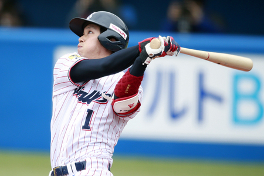 | 山田哲人 | 二塁手 | A | A | B | A | NPB史上初となる二年連続 トリプルスリーを達成した 走って打てる選手 |
|
| 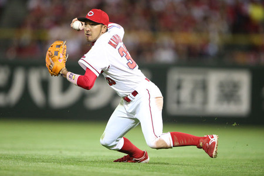 | 菊池涼介 | 二塁手 | B | A | 五年連続GB賞を受賞した 守備職人でWBCでは忍者と 海外で話題になった |
|||
| 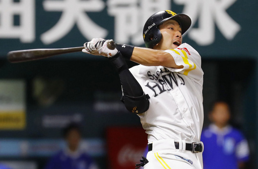 | 柳田悠岐 | 中堅手 | A | A | A | トリプルスリーを達成し 持ち味のフルスイングで HRを量産する |
||
| 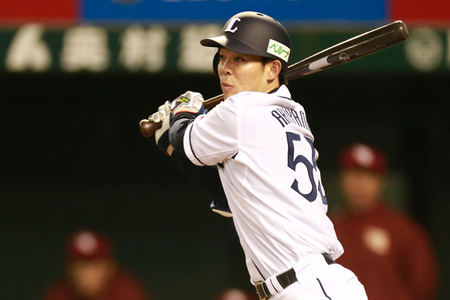 | 秋山翔吾 | 中堅手 | A | B | A | A | イチローのシーズン安打 記録を超える216安打を 達成した攻守の要 |
|
| 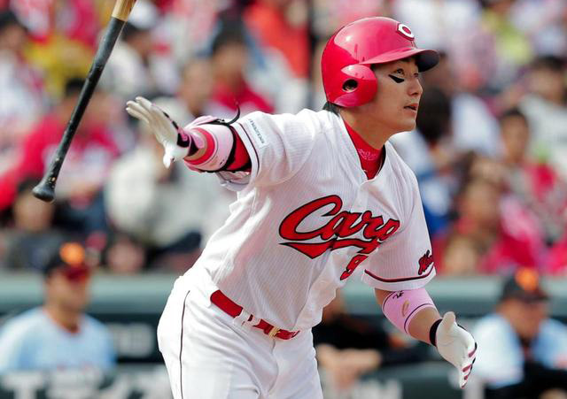 | 丸佳浩 | 中堅手 | B | A | A | B | 顔が大きいのが特徴で 出塁率が高く長打も狙える 去年にはMVPを受賞 |
|
| 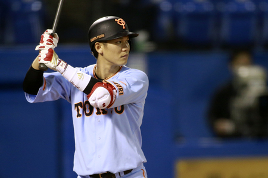 | 坂本勇人 | 遊撃手 | A | B | A | B | 毎年安定して打率が高く 守備もうまく長打も狙える 巨人のキャプテンを務める |
|
| 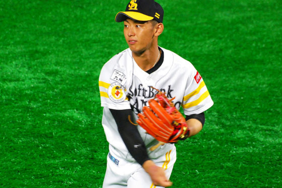 | 今宮健太 | 遊撃手 | B | A | A | 強肩を生かした華麗な 守備で出塁を許さない 足が速く走塁もうまい |
||
| 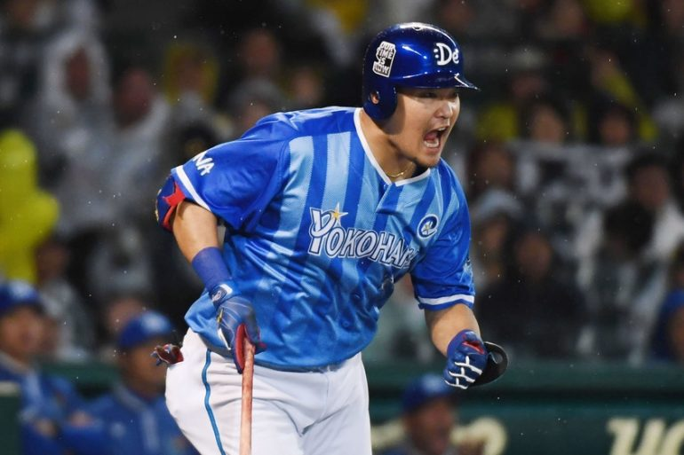 | 筒香嘉智 | 左翼手 | A | A | 侍ジャパンでは四番を 務める若き主砲で パワーと長打力が魅力 |
|||
| 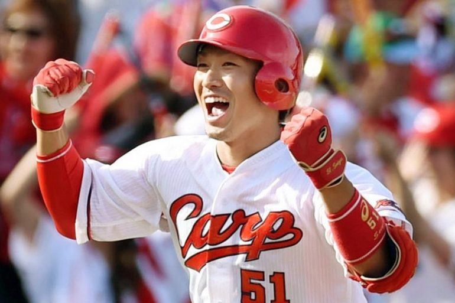 | 鈴木誠也 | 右翼手 | A | A | B | 走れて打てる選手で トリプルスリーを 達成できる可能性あり |
||
| 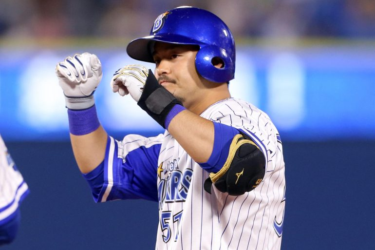 | 宮崎敏郎 | 三塁手 | A | B | B | 打率が平均して高く 去年にはセリーグの 首位打者になった |
||
| 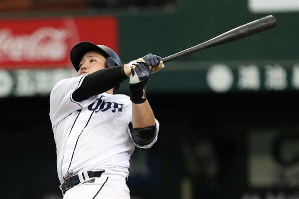 | 山川穂高 | 一塁手 | B | A | フォームが定まった 事によってHR量産した 未来の四番候補 |
|||
| 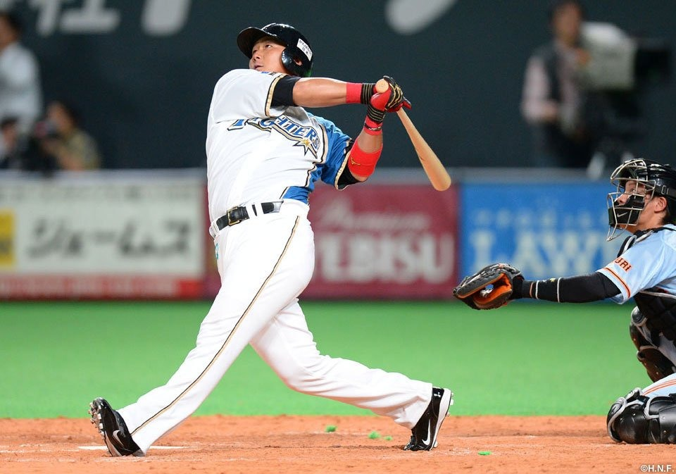 | 中田翔 | 一塁手 | A | B | 国際試合にとても強く 打ってほしいときに打つ 頼れる主砲の一人 |
過去にトリプルスリーをとった山田と柳田、筒香と中田のような主砲、守備職人の菊池、守れて打てる秋山と丸など日本を代表する野手たちが揃いました。
| 選手 | 選手名 | ポジション | 球威 | 制球 | スタミナ | 変化 | 球団 | 説明 |
|---|---|---|---|---|---|---|---|---|
| 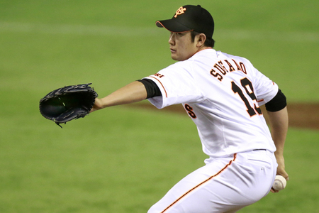 | 菅野智之 | 先発 | A | A | A | A | NPBトップクラスの投手で 去年には沢村賞を受賞した 日本のエース |
|
| 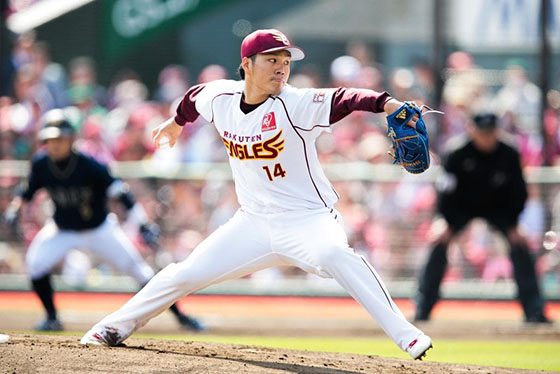 | 則本昂大 | 先発 | A | B | A | A | メジャー記録の並ぶ8試合 連続二桁奪三振や1000奪三振 を記録した奪三振王 |
|
| 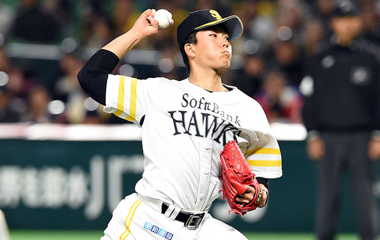 | 千賀滉大 | 先発 | A | B | B | お化けフォークと言われる 変化の大きいフォークが 武器でWBCではB9に選出 |
||
| 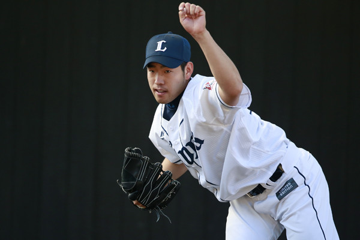 | 菊池雄星 | 先発 | A | B | A | B | 長い間制球に苦しんでいたが 去年フォームが定まり覚醒 菅野と沢村賞争いをした |
|
| 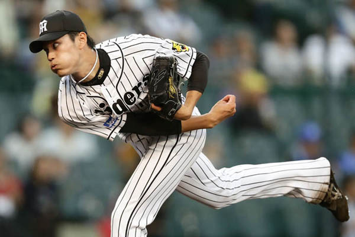 | 藤波晋太郎 | 先発 | A | B | B | 160kmを超える豪速球の 持ち主だが制球が課題 克服すればエースも |
||
| 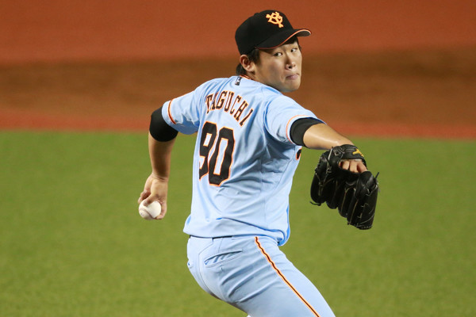 | 田口麗斗 | 先発 | A | B | B | B | 昔話題になった美人チアを 妻に持つ投手で二年連続 二桁勝利を達成 |
|
| 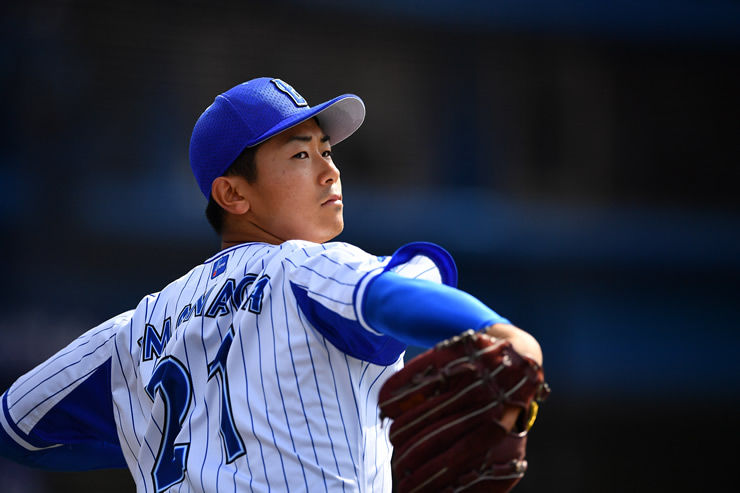 | 今永昇太 | 先発 | A | B | B | B | ルーキーながら堂々とした ピッチングで活躍した 横浜先発三本柱の一人 |
|
| 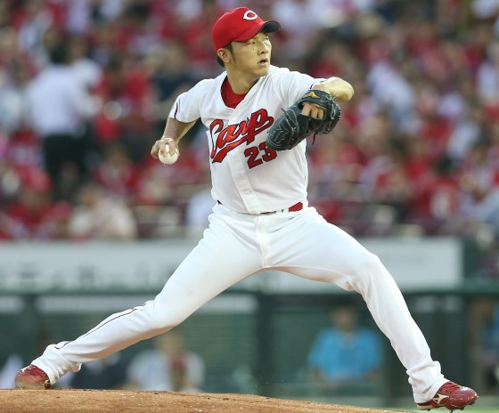 | 薮田和樹 | 先発・中継ぎ | B | B | B | 去年15勝とブレイクし セリーグ王者の広島の 投手として優勝を目指す |
||
| 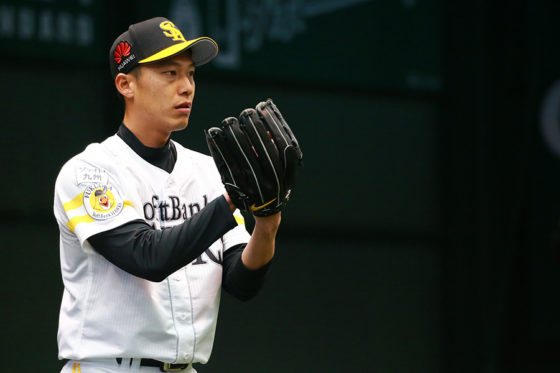 | 岩嵜翔 | 中継ぎ | A | B | B | パリーグ王者SBの中継ぎ として去年最優秀中継ぎ投手 のタイトルに輝いた |
||
| 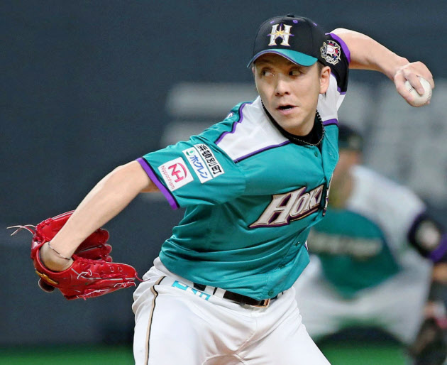 | 宮西尚生 | 中継ぎ | B | B | B | WBCでも中継ぎとして活躍 FA移籍をせずに日ハムに 残留し左腕をささげると決意 |
||
| 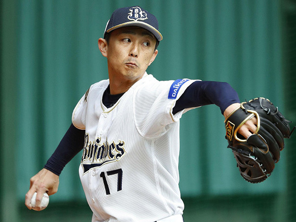 | 増井浩俊 | 中継ぎ・抑え | A | B | B | B | WBCでも活躍し長年在籍 した日ハムを離れて オリックスにFA移籍した |
|
| 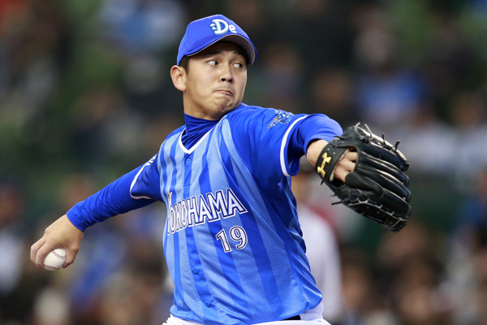 | 山崎康明 | 抑え | A | B | A | プロ４年目の最速タイで 通算１００セーブ目を 挙げた横浜の守護神 |
||
| 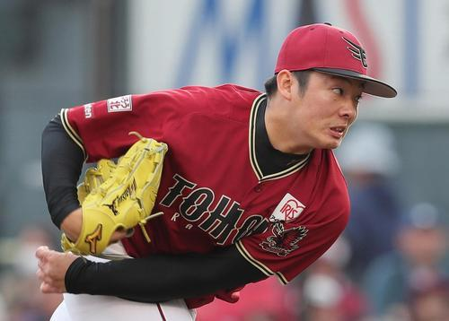 | 松井祐樹 | 抑え | A | A | 切れのあるスライダーと 伸びのあるストレート が武器の楽天の守護神 |
日本の投手トップレベルの則本、菅野やその菅野と沢村賞を競った菊池、2017WBCでベストナインに選出された千賀をはじめとした、日本で活躍する投手たちが揃いました。
| 選手 | 選手名 | ミート | パワー | 守備 | 肩力 | 走力 | 球団 | 説明 |
|---|---|---|---|---|---|---|---|---|
| 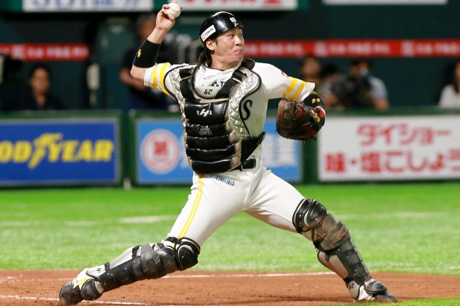 | 甲斐拓也 | B | B | B | A | 甲斐キャノンと呼ばれる スローイングを投げる強肩の 持ち主であり打撃でも期待 |
||
| 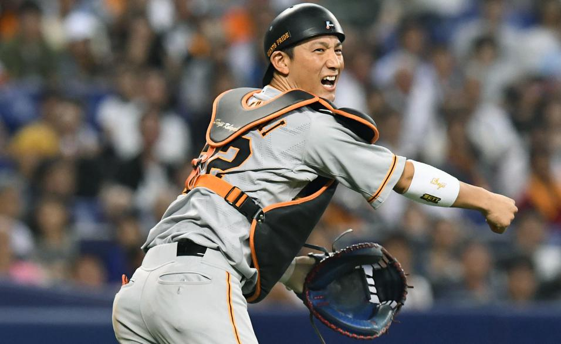 | 小林誠司 | B | B | A | 現役捕手の中ではトップクラスの 強肩の持ち主でWBCでは 世界の小林として恐れられた |
|||
| 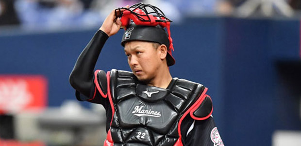 | 田村龍弘 | B | B | 2016年の交流戦では打率4割 越えと大爆発した 打って守れる捕手を目指す |
打撃には少し不安が残りますが、強肩で盗塁阻止率が高い捕手たちです。
まだ代表クラスではないですが、これから伸びてきて2020年の侍ジャパンに選出されるかもしれない期待の若武者たちもまとめました。
| 選手 | 選手名 | ポジション | ミート | パワー | 守備 | 走力 | 球団 | |
|---|---|---|---|---|---|---|---|---|
| 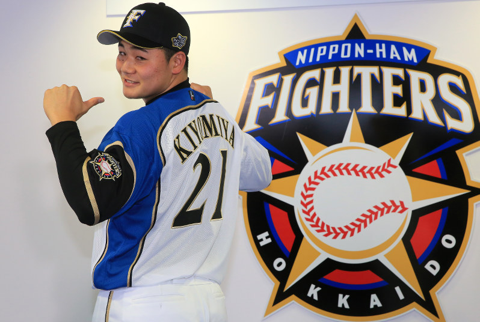 | 清宮幸太郎 | 一塁手 | B | 高校通算111本HRを記録した 怪物で今年からプロへ どんな成績を残すのか期待 |
||||
| 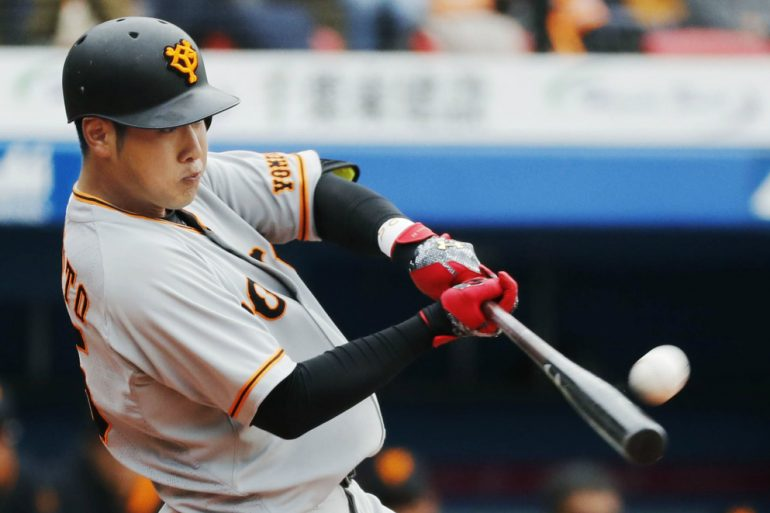 | 岡本和真 | 一塁手 | B | B | 巨人の一塁を阿部慎之助から 奪い取った期待の選手 長打力が魅力 |
|||
| 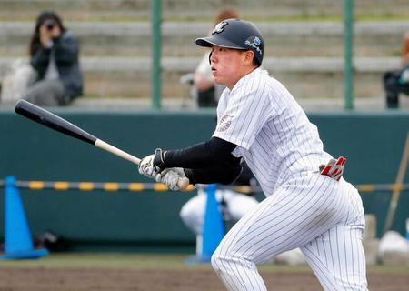 | 安田尚憲 | 三塁手 | B | 東の清宮、西の安田と 言われていた清宮のライバル ロッテの希望 |
||||
| 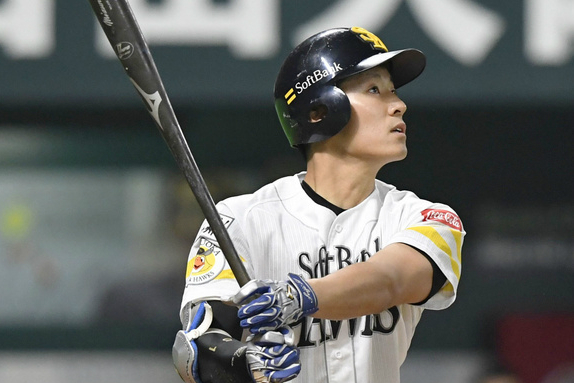 | 上林誠知 | 右翼手 | B | B | B | B | アジアチャンピオンシップの 韓国戦では同点3ランを 打ったSBの期待の若手 |
|
| 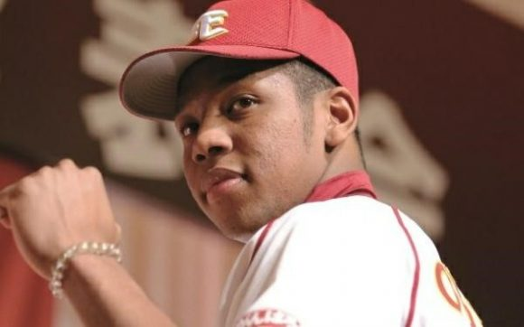 | オコエ瑠偉 | 中堅手 | B | A | 足が速く長打も打てる ポテンシャルは高い 今年こそ覚醒を期待 |
|||
| 選手 | 選手名 | ポジション | 球威 | 制球 | スタミナ | 変化 | 球団 | 説明 |
| 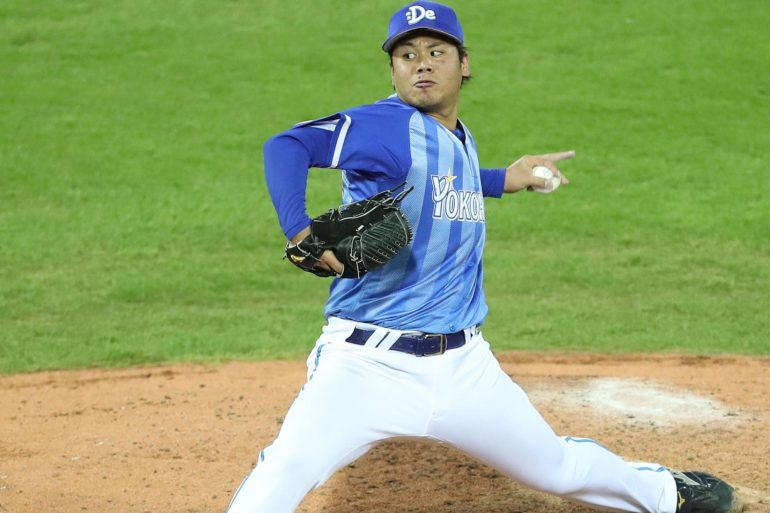 | 濱口遥大 | 先発 | B | B | B | プロ一年目ながら二桁勝利 を達成し横浜の先発 三本柱として活躍 |
||
| 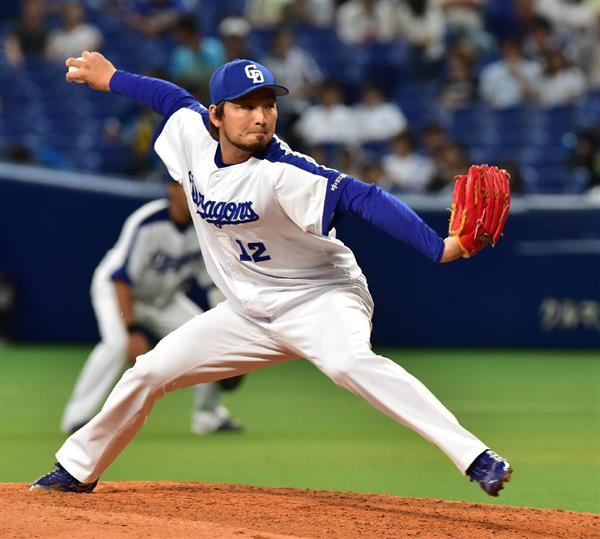 | 田島信二 | 中継ぎ・抑え | B | B | B | 去年惜しくもセーブ王に なれなかったものの 直球とスプリットが武器 |
||
| 選手 | 選手名 | ミート | パワー | 守備 | 肩力 | 走力 | 球団 | 説明 |
| 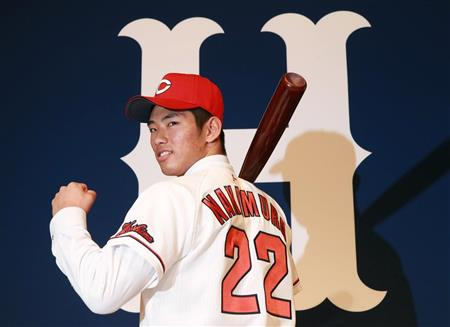 | 中村奨成 | B | B | B | 清原の甲子園の本塁打記録を 五本から六本に塗り替えた 打てるキャッチャーになれるか |
|||
| 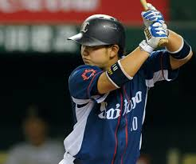 | 森友哉 | B | B | B | 近年いない打てるキャッチャー に近い存在で守備が課題 だが打撃センスは高い |
どの選手も侍ジャパンに選ばれる可能性のある選手たちなので2020年の侍ジャパンに誰が選出されるか楽しみです。
これは私個人の考えなので皆さんも考えてみてはどうでしょうか！